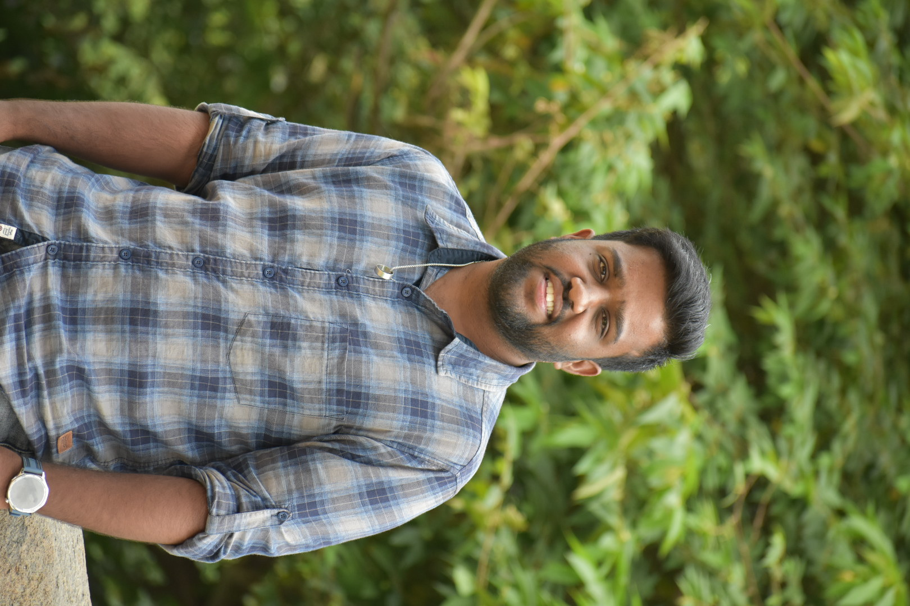

DevOps and Cloud enthusiast focused on automation, infrastructure management, and continuous delivery. Experienced with AWS, Docker, Kubernetes, and modern deployment practices.

Aspiring DevOps and Cloud Engineer with practical experience in deploying and managing applications using AWS, Docker, Kubernetes, and Jenkins. Interested in automation, scalability, and delivering efficient cloud-based solutions.
I enjoy building scalable, secure, and automated infrastructure solutions while continuously learning modern cloud technologies.
The Sonic Game Deployment project involved deploying a web-based Sonic game application in a containerized environment using Docker. The application was successfully containerized by building and configuring Docker images to ensure consistent performance across different environments. The deployment process included managing container execution, configuring port mapping, and ensuring seamless service accessibility for end users. This project demonstrated practical experience in application deployment, containerization, and DevOps practices while maintaining reliable performance and availability of the interactive gaming application.
VIEW →Developed a full-stack E-Commerce application using Django and React with features including user management, order processing, and secure payment integration. Designed and implemented REST APIs and integrated the Stripe payment gateway to enable secure online transactions. Implemented JWT-based authentication for secure user sessions and improved application reliability by debugging and resolving critical production API errors. The project also involved configuring Stripe APIs, fixing authentication and API key issues, and validating endpoints using Postman and curl while ensuring secure handling of payment data and backend services.
VIEW →Designed and deployed a production-ready fullstack Employee Management application using modern cloud-native and DevOps practices on Amazon Elastic Kubernetes Service. The project focused on containerization, CI/CD automation, secure secret management, and scalable microservice deployment.
VIEW →